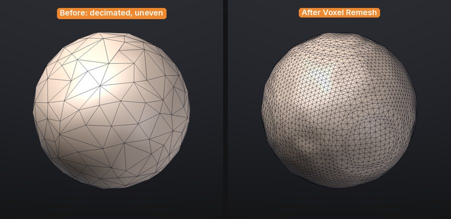
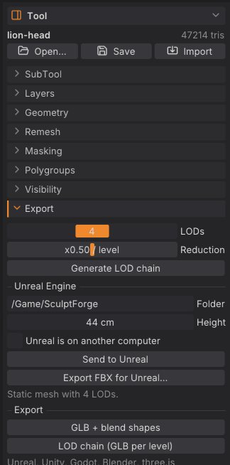

Subdivide, remesh, decimate and LODs
These tools change the topology of the active SubTool: add resolution for detail, rebuild an even surface, reduce the triangle count, or make a chain of levels of detail for a game engine. This chapter explains what each one does to your mesh and its attributes, and when to use it.
All of them work on the active SubTool and, except the LOD preview, are undoable with Ctrl+Z.
At a glance#
| Tool | Where | Triangles | Quads | Keeps sculpt layers | Keeps mask and polypaint | Keeps polygroups, hidden faces, UVs |
|---|---|---|---|---|---|---|
| Divide (levels) | Tool > Geometry > Divide, Ctrl+D | x4 per level, lower levels kept | Each quad becomes four (Catmull-Clark) | Yes | Yes (interpolated) | Yes |
| Subdivide | Tool > Geometry > Subdivide | x4 per level | Each quad becomes four | Yes | Yes (interpolated) | Yes |
| Voxel Remesh | Tool > Remesh > Voxel Remesh | Set by resolution | All quads (new ones) | Baked in | Yes (transferred) | No (reset); a texture is kept on new UVs with Keep Texture |
| QRemesh | Tool > Geometry > QRemesh | Set by Target Polygons | All quads, with edge loops | Baked in | Yes (transferred) | Polygroups with Keep Groups; no hidden faces; a texture is kept on new UVs with Keep Texture |
| Decimate | Tool > Geometry > Decimate | Reduced | No, all triangles | Yes | Yes | Yes |
| LOD chain | Tool > Export | One level per ratio step | LOD0 keeps them; lower levels are triangles | Yes, on every level | Yes | Yes |
Quads and triangles#
SculptForge sculpts on triangles, but it remembers which pairs of triangles were one quad. A model you open from ZBrush (GoZ), Blender or Maya (OBJ, FBX, PLY, USD) keeps its quads: PolyF draws them as quads, without the diagonal, and OBJ, FBX, PLY, USD and GoZ exports write them back as quads, corner for corner. Polygons with more than four sides are split into triangles. The new Plane and Cube are made of quads, and so is the result of a voxel remesh.
Sculpting, masking, polypaint, sculpt layers, undo, SubTools and project files all keep the quads. Subdivide turns every quad into four quads. Two things turn quads into triangles:
- Decimate (and the lower levels of a LOD chain) collapses edges, so its result is all triangles.
- When the two halves of a quad end up in different polygroups, or one half is deleted, they show and export as two triangles.
glTF (.glb) and STL only hold triangles, so those exports always write triangles.
Subdivide#
For sculpting at several resolutions use Divide (Ctrl+D), which keeps the lower levels to step back to: see Subdivision levels. Subdivide is the one-way version.
Tool > Geometry > Subdivide smooths the mesh with Loop subdivision. Each level multiplies the triangle count by four and rounds off the shape slightly, like ZBrush's Divide with Smt on.
- Sculpt layers are subdivided with the mesh, so blend shapes keep working.
- Mask, polypaint and UVs are interpolated; polygroups and hidden faces carry over.
- Each quad becomes four quads; triangles become four triangles.
- SculptForge refuses to subdivide past 50 million triangles.
Voxel remesh#
Tool > Remesh > Voxel Remesh rebuilds the active SubTool as an even, watertight surface, like ZBrush's DynaMesh. Use it to:
- fuse overlapping pieces into one surface (append a sphere, overlap it, merge, remesh);
- even out stretched triangles after heavy Move or Snake Hook work;
- clean up scans, splat conversions and AI-generated models before sculpting.
The Resolution slider next to the button sets how many voxels span the longest side of the model (64 to 400 in the palette, default 200). Higher keeps more detail and makes more triangles.


What happens to your data:
- Sculpt layers are baked into the surface: the result has no layers.
- Mask and polypaint are transferred from the nearest original vertex.
- Polygroups, hidden faces and UVs are reset (everything becomes visible, one polygroup). Hidden parts are remeshed too.
- A painted texture is kept with Keep Texture (on by default, shown next to the button when the SubTool has a texture): the result gets Auto UVs and the texture is projected onto it, every layer included, in the same undo step. This runs in the background (Auto UV of a few hundred thousand triangles takes several seconds) with a progress bar and Cancel. Off: the texture is dropped. See Texture painting.
- Separate pieces that don't touch stay separate pieces; overlapping ones are merged.
- The new surface is made of even quads (the original's quads are rebuilt, not kept).
To remesh several SubTools into one, first combine them with Merge visible... or Merge down... in SubTools.
QRemesh#
Tool > Geometry > QRemesh is automatic quad retopology, like ZBrush's ZRemesher: it rebuilds the SubTool as clean quads whose edge loops follow the forms, close to a target polygon count, with Keep Groups, Adaptive Size, polypaint density and symmetry. ProjectAll (Tool > SubTool > Project) brings the sculpted detail back onto the new topology after you divide it. Both have their own chapter: Quad retopology and detail projection.
Decimate#
Tool > Geometry > Decimate reduces the triangle count while keeping the shape, using quadric edge collapse (the same family of algorithm as ZBrush's Decimation Master). The Keep slider next to the button sets the fraction of triangles to keep (0.05 to 0.95, default 0.50).
Decimation keeps open borders in place, and because it only removes vertices, every remaining vertex keeps its exact sculpt layer offsets, mask and polypaint. Polygroups, hidden flags and UVs survive on the remaining triangles. The result is all triangles: quads are not kept.
Use it to make a lighter version of a finished sculpt for export, 3D printing or a review, or to bring a dense scan down to something you can work with.
LOD chains#
A level-of-detail chain is a series of lighter copies of the model for game engines: LOD0 is the full sculpt, and each level after it has a fixed fraction of the triangles of the one before.
- Open Tool > Export.
- Set LODs (2 to 6 levels, including LOD0) and Reduction (the triangle ratio from one level to the next, 0.1 to 0.9, default 0.50).
- Click Generate LOD chain.


A table lists each level with its triangle count and its budget as a percentage of LOD0. Click a level to preview it on the canvas (wireframe turns on and sculpting pauses); click Sculpt in the table to go back to the editable mesh. The next stroke, or a change to LODs or Reduction, clears the chain; click Generate LOD chain again to rebuild it.
Blend shapes (sculpt layers) are kept on every level, so morph targets work at every LOD.
To write the chain to disk:
-
LOD chain (GLB per level) in the same sub-palette, or File > Export LOD Chain..., writes one GLB per level named
<name>_LOD0.glb,<name>_LOD1.glband so on. - Send to Unreal and Export FBX for Unreal... pack the LODs into one FBX for Unreal's automatic LOD import.
See Exporting for these exports and their options.
Undo and safety#
Subdivide, remesh, QRemesh, decimate and delete hidden are single undo steps on the active SubTool. They can use a lot of memory on dense meshes, and undo keeps a full copy of the previous mesh for each of them. Before a big change on a heavy sculpt:
- QuickSave (title strip) keeps a timestamped copy of the scene without touching your project file; see Projects.
- Duplicate the SubTool to keep the old version side by side.
Scripting#
| Command | Options |
|---|---|
subdivide | levels 1-4 (default 1) |
remesh | resolution 32-512 voxels across the longest side (default 200); keep_texture (default true) |
decimate | ratio 0.01-1 of the triangles to keep (default 0.5), or triangles for an exact target |
qremesh | target quads (default 5000), adaptive, keep_groups, detect_edges, use_polypaint, symmetry, keep_original, keep_texture; see Quad retopology |
export_lods | path (base name), levels 1-8 including LOD0 (default 4), ratio 0.1-0.9 (default 0.5) |
sculptforge-cli -c 'open path=scan.obj; remesh resolution=256; decimate triangles=200000; export_lods path=out/rock.glb levels=4 ratio=0.5'The command line accepts a wider remesh range (32-512) than the palette slider.
See also#
- Quad retopology and detail projection: QRemesh and ProjectAll
- SubTools: merge pieces before a remesh, duplicate before a decimate
- Sculpt layers and blend shapes
- Exporting: LOD chains, FBX for Unreal, Send to Unreal
- Image and text to 3D: generated models are voxel-remeshed for sculpting